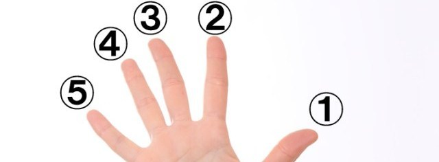

Lesson 56 Bahagian badan (Parts of the body)
Updated on 16 October 2024
The above sentence (Dia makan dengan tangan) or, if you prefer, Dia makan dengan tangannya is not as strange as it appears to be, as many Malaysians, like Indians, prefer to eat with their hands (a cultural thing) just as many Chinese eat with chopsticks and Europeans with a fork and knife. As a matter of fact, many Malays swear that the food tastes better when taken with their fingers.
Click to listen to the Malay sentences.
A second reading (by Michelle Nor Ismat, a native speaker)
kepala
mata
telinga
hidung
mulut
| head
eye
ear
nose
mouth
|
gigi
leher
bahu
tangan
jari
|
tooth/teeth
neck
shoulder
hand
finger
|
perut
kaki
rambut
muka
tulang
|
stomach
foot/leg
hair
face
bone
|
Note that gigi is NOT pronounced as the title of the 1958 musical film "Gigi" nor as the "gi" in "gin". Instead it is pronounced as the "gi" in "give".
It is important to be able to name the parts of the body in Malay as any sickness or health problem associated with that particular part of the body can simply be expressed by putting the word sakit before it as we will see in the next lesson.

Note that the same Malay word is used for singular or plural. Thus gigi is translated as "tooth" or "teeth" according to the context.
From the word mata (eye) we have the word matahari (hari, as you have seen in Lesson 7, means "day"). So what can matahari mean? Why, "eye of the day", of course, which is the Malay way of referring to the sun!
For the more ambitious among you (or simply lovers of nature) the following are the Malay words for "sunrise" and "sunset":
matahari terbit = sunrise (terbit means "rise")
and
matahari terbenam = sunset (terbenam means "hidden", "set" or "submerged")
To continue with the word mata. Please don't apply blindly the common rule that the plural in Malay is formed by duplicating the word, as mata-mata means "policeman" (ok, eyes of the people if you like). But mata-mata in Indonesian means "a spy" (perisik in Malaysia).
And what does mata-mata gelap ("dark" policeman) mean? Well, if I were to tell you that in English we don't say "dark eyes" but "private eyes" you would have been able to guess the meaning. Yes, mata-mata gelap is the Malay word for a detective.
Incidentally the plural form of a word in Malay is not needed when it is evident that there are more than one. Compare:
Buku di atas meja itu belum lagi dibaca. (= The book on the table has not been read yet.)
and
Buku-buku di atas meja itu belum lagi dibaca. (= The books on the table have not been read yet.)
with
Dia ada banyak buku. (He has many books.) Here since we have the word banyak (pronounced as ba-nyak) meaning "many" it would be wrong to say Dia ada banyak buku-buku. So that is another difference with English. The singular form of a noun (not the plural) is used when plurality is already implied in the context with such words as "many", "several" or "hundreds of", etc.
A number of compound words are formed with the names of the various parts of the body. Among them are:
jam tangan = a wrist-watch (jam means a "clock" while jam loceng means an "alarm clock").
tali leher = a neck-tie (tali means "rope")
cermin mata = spectacles (cermin means a "mirror")
ubat gigi = toothpaste (ubat, as you would know from the previous lesson, means "medicine"). Thus, literally, toothpaste is medicine for the teeth in Malay!
kakitangan = staff, employees (literally translated kakitangan means "feet and hands"). If you like to make use of mnemonics, well just remember that in any office the staff are the ones who have to move their feet about and do things with their hands, certainly not the director!) But this word has a different meaning in Indonesia. There it means a "henchman" or "stooge"! This is a rare example of faux amis in the two almost-similar languages.
Incidentally, your left hand is tangan kiri while your right hand is tangan kanan.
Please remember that when you are in Malaysia you must always use your right hand (and never your left) when giving (or passing) something to someone. It is considered impolite to use the left hand when handing over things to someone.
Do you remember what rambut means? (Just glance up if you don't.) Well, someone without any rambut is botak (bald-headed). Thus when you hear Orang itu botak you know it means "That man is bald-headed."
To all intents and purposes the Malay word kaki can mean either leg/legs or foot/feet. Only the context will tell eg.
1. Dia pergi ke kedai untuk menukar kasut barunya kerana ia terlalu besar untuk kakinya. (He goes to the shop to change his new shoes as they are too big for his feet). Here kasut = foot
2. Dia duduk dengan melunjurkan kakinya. (He sits with his legs outstretched). Here kasut = leg
There is a specific word for thigh, though and that is paha while ankle is buku lali (as you can see buku has nothing to do with a book here!)
Finally it might be interesting to note that kaki, apart from meaning "foot" or "leg", has also the connotation of being an "expert" or an enthusiast in whatever comes after. Thus:
kaki minum or kaki botol = a drinker (botol is the Malay spelling for "bottle"). By the way the Malay word for alcohol is minuman keras (literally "hard drinks").
kaki gaduh = a quarrelsome chap, someone who will pick up a fight over nothing (bergaduh means "to quarrel")
kaki bohong = a liar (bohong means "to lie"). The usual word for a liar is pembohong
kaki pancing = a fishing enthusiast, an angler (memancing or mamancing ikan means to fish)
kaki judi = a gambler (the usual word for a "gambler" is penjudi while the verb for "gamble" is berjudi.)
kaki perempuan = a womanizer
kaki bola = a football fan (the word for "football" is actually bola sepak as bola alone simply means a "ball".)
While the above expressions have to do with a liking for or a tendency towards something, the ones that follow have a meaning much to themselves:
kaki lima = pavement ("five-foot-way")
kaki ayam = barefooted (easy, this one! Hens don't wear shoes so someone who is barefooted has a hen's feet!)
Lastly, if you hear a person being mentioned as someone's kaki it simply means that he is his buddy, chum, crony or member (slang).
These various expressions coming from a single word show you how rich and colourful the Malay language is.
Jari for fingers and toes

1. ibu jari = the thumb (literally "the mother of fingers") though some call it jari ibu.
2. jari telunjuk = the index finger (literally "the finger that points")
3. jari tengah or jari hantu = the middle finger (tengah means middle while hantu means ghost). If it helps, think of giving someone the middle finger as scaring the ghost out of him!
4. jari manis = the ring finger ("manis" actually means "sweet"). Yes, what can be sweeter than an engagement ring or a wedding ring, i.e. until the trouble starts!
5. jari kelengkeng = the little finger (it's spelt kelingking in Indonesian). Forget this one as you are most unlikely to use it though there is a French expression "My little finger tells me" equivalent to "A little birdie tells me" in English ("tells me" is beritahu saya, by the way). Don't try to translate either of these expressions into Malay though or you'll be "rewarded" with a startled look! But if you really need to learn this perhaps jari anak, which also means the "little finger" is easier to remember, seeing that anak (child) is at the other end of ibu (mother) used for the thumb, remember?
jari is also used for toes. Just add the word kaki (meaning "foot") to it. Thus
jari kaki means toes and ibu jari kaki is the big toe.
Previous lesson
Table of Contents
Next lesson